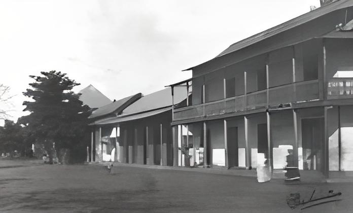

Fundación de Montería
La ciudad fue fundada oficialmente el 1º de mayo de 1777 por Antonio de la Torre y Miranda, quien la trasladó a su actual ubicación en la ribera derecha del río Sinú y la bautizó como San Jerónimo de Buenavista. Posteriormente fue renombrada como San Jerónimo de Montería. El nombre Montería se da en honor a un primer poblado levantado en el lugar de las monterías, llamado así por ser el sitio de reunión de los monteros que cazaban en sus alrededores.
Leer Más